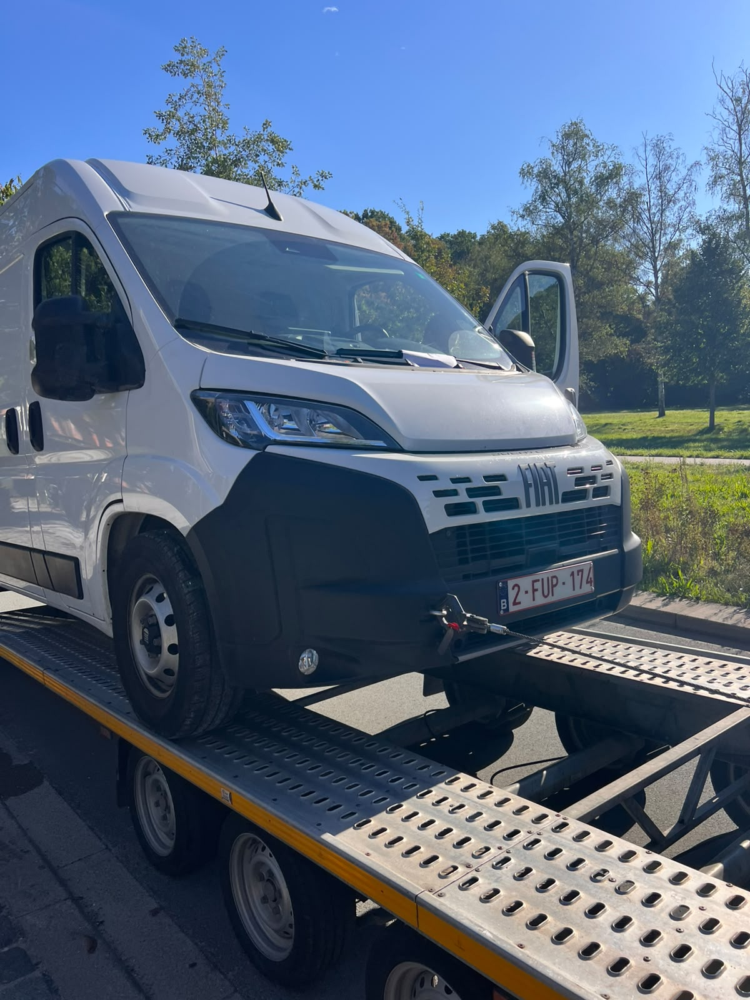
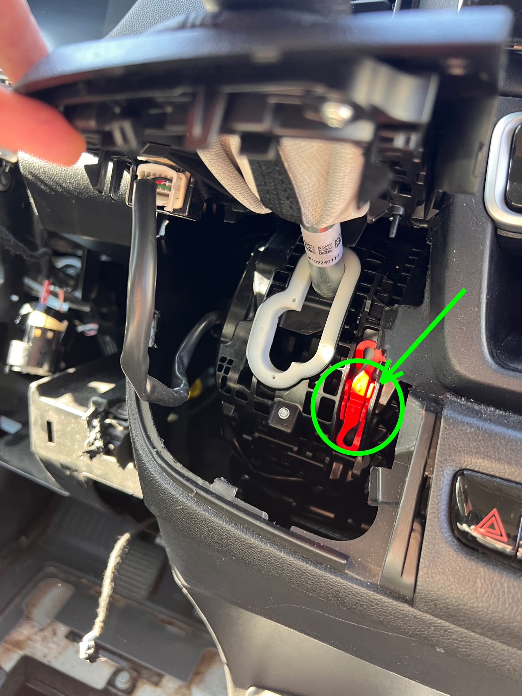
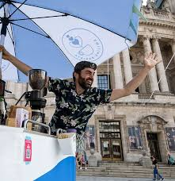
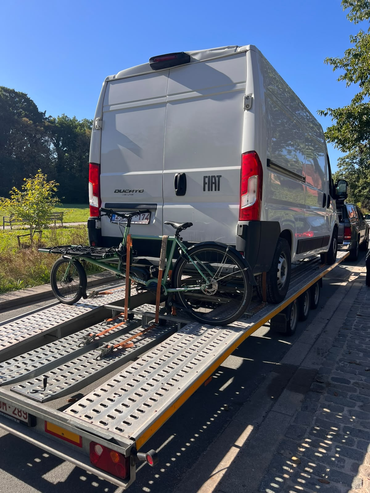

16 września 2026
Pomoc klientowi z „Smile”, to nas cieszy!
Smiling Barista zadzwonił do nas dziś rano o 9.00, czyli jak zaczęła się nasza historia: „Smile i kawa”.

Niestety, żadnych uśmiechniętych twarzy u pracowników Smiling Barista. Antwerpski mobilny zespół kawowy nie mógł uruchomić swojego Fiata Ducato. Kluczyk w stacyjce się nie przekręcał, a na myśl o konieczności wezwania drogiej lawety z dźwigiem, by wyciągnąć ich z kłopotu, wybuchła panika.
Przeczytaj całą historię
Czy wiedzą Państwo, że… holowanie z użyciem dźwigu to najdroższa forma pomocy drogowej, jaka istnieje, ponieważ pojazd musi zostać faktycznie podniesiony? Oczywiście nikogo ta myśl nie cieszy.
Poprosili nas o pomoc i w ciągu pół godziny byliśmy na miejscu z burzą mózgów sprytnych i tańszych rozwiązań w głowach. Dzięki wieloletniemu doświadczeniu wiemy, że najdroższe rozwiązanie nie zawsze jest najszybsze i najlepsze!

Oszczędzimy Państwu technicznej historii „magicznej czerwonej dźwigienki”, ale (dzięki naszej wiedzy) udało nam się, mimo zablokowanej stacyjki, ustawić samochód na luzie. I to bez potrzeby użycia dźwigu! Od tego momentu Fiata Ducato można było odholować w klasyczny i tańszy sposób. Zawieźliśmy samochód dostawczy prosto do warsztatu, gdzie można było naprawić stacyjkę.
Dzięki wieloletniemu doświadczeniu wiemy, że najdroższe rozwiązanie nie zawsze jest najszybsze i najlepsze!
Misja wykonana!
Nie możemy powiedzieć nic innego, jak tylko to, że była to interwencja z „uśmiechem”. Umiejętność rozwiązywania problemów i wiedza techniczna naszego zespołu, który szuka dla Państwa szybkiego, taniego i bezpiecznego rozwiązania – to właśnie my!
O Smiling Barista

Fajne w naszej pracy jest nie tylko to, że możemy szybko i tanio pomagać klientom, ale też to, że dzięki tym wszystkim kontaktom poszerza się nasza własna wiedza o świecie.
W ten sposób dowiedzieliśmy się, że Smiling Barista …

- … sprzedaje mobilne specjały kawowe ze swoimi Veloppresso i może być obecny na eventach, teambuildingach i warsztatach w Antwerpii i okolicach.
- … z entuzjazmem opowiadają ludziom wszystko, co warto wiedzieć o espresso i latte art.
- … nie ogranicza się do granic naszego kraju, lecz obsługuje także targi i eventy we Francji, Holandii, Niemczech i Włoszech.
- … także na Państwa evencie może stworzyć coś fantastycznego, co jest czymś więcej niż standardowy catering kawowy!